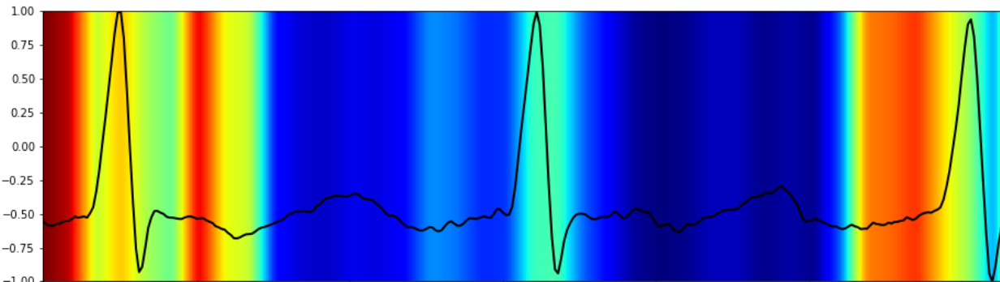

1. Noise Robustness

Removes motion artifacts while preserving clinical features.
2. Attention Mechanism
Model learns to “pay attention” to diagnostically relevant parts.
As a Senior Chief AI Engineer at Samsung R&D, I’ve spent the last few years working at the intersection of machine learning and human health. From improving smartphone vision systems to decoding heartbeats, I’ve seen Convolutional Neural Networks (CNNs) evolve into powerful tools beyond just image recognition.
In this blog, I’ll unravel the “why” behind CNNs, show you how they preserve meaningful structure in data, and share how we’re adapting them to save lives—one heartbeat at a time.
Imagine trying to understand a sentence after randomly shuffling its words—that’s what traditional neural networks do to images. Flattening a 256×256 MRI scan into a 1D vector throws away the spatial relationships that matter most.
Flattening destroys local relationships
That’s where CNNs shine:
What if I told you the same magic behind facial recognition also helps decode heart rhythms? While CNNs were born in the image world, their DNA works just as well for 1D signals like ECGs.

CNN kernels sliding over ECG signals to detect QRS complexes—just like detecting edges in images
In one of my recent research projects, we developed a hybrid model called the Attention-Based Convolutional Denoising Autoencoder (ACDAE). The goal? Clean up noisy ECGs and simultaneously detect arrhythmias.
Removes motion artifacts while preserving clinical features.
Model learns to “pay attention” to diagnostically relevant parts.
Medical signals behave differently from natural images. Here's a cheat sheet I always keep in mind:
| Factor | Natural Images | Medical Signals (e.g. ECG) |
|---|---|---|
| Augmentation | Flip, rotate freely | Use time-warping, scaling only |
| Kernel Size | Typically 3×3 | Depends on waveform duration (e.g., QRS ≈ 120ms) |
Whether I’m analyzing X-rays or heartbeats, my approach remains the same:
CNNs are no longer just for selfies or cat videos—they’re helping diagnose heart disease, detect tumors, and even enhance driver safety. And as we adapt them to new domains, their impact only grows.
Thanks for reading! Feel free to connect if you're working on AI in healthcare—I’d love to learn from your journey too.